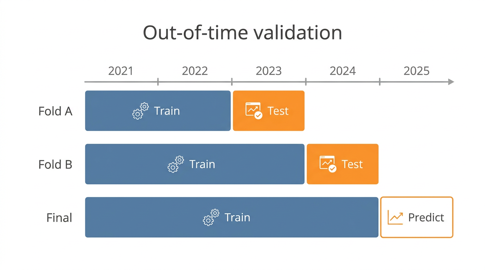
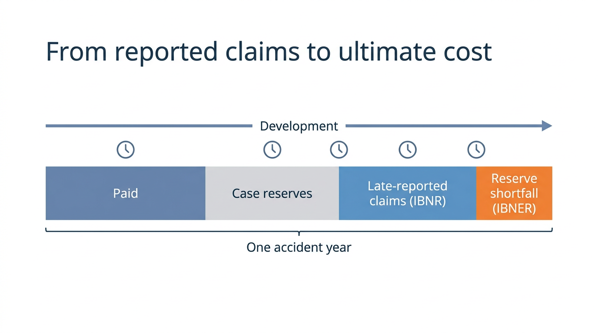
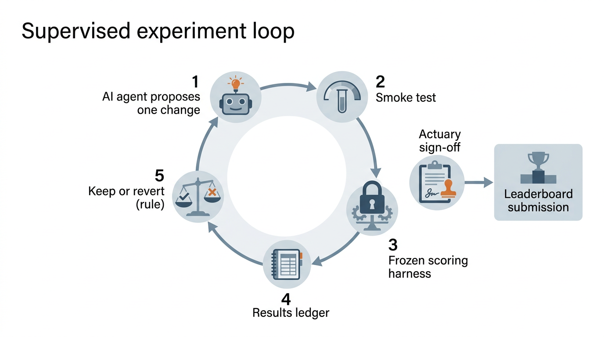
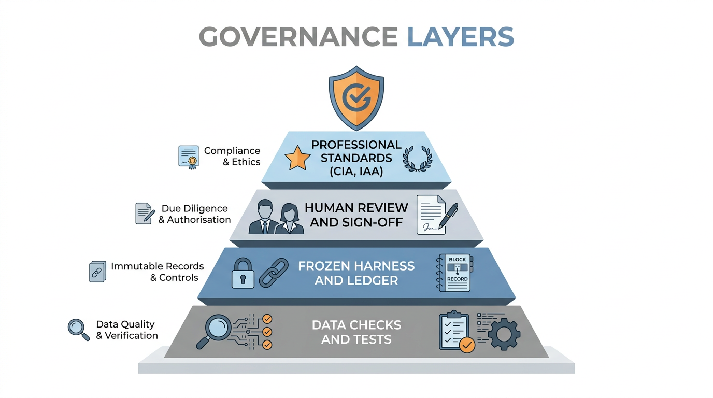

Summary
- The model has improved from a validation score of 0.1108 to 0.1389 over 56 supervised experiments. On the public leaderboard it moved from 0.1060 to 0.1230; the leader is at about 0.129.
- Local validation predicts the leaderboard well on the later validation year (fold B) and overstates gains on the earlier one (fold A). The score now weights fold B twice for that reason.
- Three data problems were found and fixed before modelling: exposure recorded in days on about 0.4% of rows, a field that leaks claim information in the training data only, and motor bodily injury case reserves that are too light. Each is logged with its treatment.
- An AI agent proposes one change at a time; a frozen harness scores it; a fixed rule keeps or reverts it; nothing reaches the leaderboard without the actuary's sign-off.
- A neural network for tables (TabM), trained on the Mac's GPU and averaged 50/50 with the best boosted-tree model, scores higher on both validation years than either model alone. The gain is largest on buildings and contents. The actuary approved it and it was submitted on 18 October: public leaderboard 0.1230, up from 0.1191, the largest single gain so far.
- A study of every rating variable (see Variables) found that a few groups of fields cost accuracy on some lines, and that written premium, the strongest variable, drifts between training and 2025. Both are now in the experiment queue.
How performance is measured
| Measure | What it tells you | How it is used |
|---|---|---|
| Tweedie D² (power 1.5) | Share of the deviance of a flat "everyone pays the average" model that our model removes. 0 means no better than the average; higher is better. Tweedie deviance suits insurance costs: many zeros and a long right tail. | The leaderboard metric. Computed locally exactly as Kaggle does (confirmed by a calibration submission). |
| Score (weighted) | Fold A and fold B D², with fold B counted twice. | The number the loop optimises. Fold B is weighted up because it tracks the leaderboard. |
| Worse fold | The lower of the two fold scores. | A gate: a change that improves the average but hurts either year by more than seed noise is rejected. |
| Noise floor (0.002) | How much the score moves from random seeds alone (standard deviation 0.0026 for one seed). | A change must beat the best model by more than this to be kept. |
| Within-line D² | Accuracy of the ranking inside motor, buildings and contents separately. | Shows where improvement is coming from; pooled D² also rewards getting line levels right. |
| Actual ÷ expected by line | Whether each line's total is priced at the right level. | Should sit between 0.97 and 1.03. |
| Lift and Gini | How well the model separates cheap risks from expensive ones; the lift chart shows actual cost by predicted-risk decile. | A steeper lift curve means better risk selection. |
The data, sample and validation approach
What the data is
| Line | Year | Rows | Exposure-years | Claims | Frequency | Developed loss cost (CU) |
|---|---|---|---|---|---|---|
| Buildings | 2021 | 155,729 | 140,783 | 6,195 | 4.4% | 384 |
| Buildings | 2022 | 183,864 | 149,872 | 6,792 | 4.5% | 411 |
| Buildings | 2023 | 184,132 | 149,987 | 6,817 | 4.5% | 434 |
| Buildings | 2024 | 184,001 | 149,918 | 6,571 | 4.4% | 487 |
| Contents | 2021 | 158,848 | 140,931 | 5,583 | 4.0% | 106 |
| Contents | 2022 | 187,632 | 149,986 | 6,024 | 4.0% | 107 |
| Contents | 2023 | 187,646 | 149,975 | 6,158 | 4.1% | 117 |
| Contents | 2024 | 187,491 | 149,967 | 5,988 | 4.0% | 121 |
| Motor | 2021 | 216,008 | 187,992 | 27,356 | 14.6% | 565 |
| Motor | 2022 | 254,685 | 199,699 | 29,691 | 14.9% | 588 |
| Motor | 2023 | 254,577 | 199,682 | 27,990 | 14.0% | 606 |
| Motor | 2024 | 254,698 | 199,786 | 25,864 | 12.9% | 615 |
Sample and validation approach
The training data covers policy years 2021 to 2024 (2,409,311 policy-period rows); the test set is 2025 (626,639 rows). Because the task is to forecast a future year, validation is out of time: the model is trained on earlier years and scored on the next one, twice. Random cross-validation would mix years and overstate accuracy.
Every policy-period row is used; nothing is sampled away. A policy can appear in several years, which mirrors 2025 (85% of 2025 policies were insured before), so rows are not grouped by policy. Training targets are developed to ultimate and trended to the year being predicted; each line's overall level is anchored to the trended history, and the model supplies the relativities.

Data cleaning: what was checked and what was done
Each finding: what, how found, size, treatment, where it is enforced.
| # | Finding | How found | Size | Treatment | Enforced in |
|---|---|---|---|---|---|
| 1 | Exposure recorded in days instead of years (values 365, 89, 292...) and a cluster at 1.01 | AI profiling: train-2024 mean exposure above 1.0 for one-year rows; confirmed by comparing exposure with period length | about 0.4% (days) and 0.3% (1.01) of training rows; test files clean | Exposure recomputed as (end - start + 1) / 365 for every row | data.py; tests/test_core.py |
| 2 | customer_service_contacts includes claim-related contacts in training only |
Feature importance (72% of gain), then distribution check | Train rows with a claim 3.5 contacts per exposure-year vs 0.5 without; test 0.50 | Excluded as a feature (target leak) | features.FORBIDDEN; test |
| 3 | Motor bodily injury case estimates understate final cost | Same report-delay cohorts show falling severity in younger accident years while other perils inflate; open shares 76-92% in 2024 | 2024 BI developed by reported-cost chain ladder came out 24% below earlier years | Frequency x severity projection for BI (count chain ladder x trended 2021 severity) | ultimate.py; config freq_sev |
| 4 | Claims that match no policy period | Join integrity check | 410 of 161,439 non-repudiated claims: 271 dated 2020 (before any policy row), 47, 47 and 44 in 2021-2023 | Excluded; counted every build | target.py stats; test (< 0.5%) |
| 5 | Missing values spread evenly across unrelated columns | Profiling | about 2.5% in several columns (e.g. vehicle_age, smoke_alarms, security_level); same pattern in test | Left as missing; GBM handles missing natively; any GLM imputes the same way in train and test | experiment.py |
| 6 | renewal_decision exists only in training files and describes the outcome after the period |
Schema comparison | all training rows | Excluded as a feature | features.FORBIDDEN; test |
| 7 | 2024 rows end on 30 December (365-day year in a leap year) | Period profiling | all 2024 rows | No effect: no claims are dated 2024-12-31 | documented only |
| 8 | customer_since_year drifts between train and test by construction |
Train vs test shift scan | +0.56 sd | Replaced by tenure (year - customer_since_year) |
features.py |
Open item: why 2021-2023 orphan claims fall outside every policy period (cancelled or lapsed rows, or date errors) is not yet explained.
Pipeline issues (code, not data)
| # | Issue | How found | Effect | Treatment | Status |
|---|---|---|---|---|---|
| P1 | n_lines_held shared the n_ prefix of the claim-count columns, so the experiment filter and the harness's hide_target both removed it |
Reading the feature filter while preparing TabM | The feature was never used by any model before 2026-10-18 | Renamed lines_held in features.py; tested (no gain) and excluded from LightGBM; TabM uses it |
fixed |
| P2 | The credibility encoder's cross-fitting folds were unseeded | The best model did not reproduce after a dataset rebuild | Same model scored 0.1332 to 0.1339 across four runs | random_state=0; best model re-baselined (0.1330) |
fixed |
| P3 | On the run that rebuilds the dataset cache, harness.dataset() returns the in-memory frame, whose categorical columns differ from the parquet round-trip; the target encoder then crashes |
First harness run after the P1 rename | Loud crash, never a wrong score; every later run reads the cache and works | Fixed 2026-10-18 (owner-approved): dataset() returns pd.read_parquet(path) after writing. The fingerprint now covers only data-building code and config, so harness changes no longer orphan the TabM files; rebuilt dataset verified identical |
fixed |
Exploratory analysis
The contacts chart is the clearest finding: training rows with a claim show 3 to 5 contacts, rows without a claim mostly 0 or 1, and the 2025 test rows look exactly like the no-claim rows (0.50 vs 0.51 per exposure-year). The field records claim calls in training only, so it would look like the best predictor and then fail on 2025. It is excluded. The missing-values chart leaves out telematics score, which is blank for the 88% of motor policies that did not opt in to telematics; that is by design, not a defect. The other gaps are about 2.5% everywhere, in training and test alike, which points to deliberately injected noise rather than a pattern.
Getting the target right: developing claims to ultimate

The leaderboard scores predictions against ultimate cost, so training targets must be ultimate too. Claims are valued once, at 31 December 2024, and 2024 losses are a third unpaid. Development uses a chain ladder on reported cost by loss month and reporting delay, for each line and peril group. Motor bodily injury reports slowly (7% of cost in the loss month, 85% within a year) and its open case reserves are too light: for the same reporting delay, younger loss years show lower average cost while every other peril inflates. It is therefore projected as ultimate claim count times the 2021 average cost, trended at 3.5% a year.
The test of the method: developed 2024 should sit on the 2021-2023 trend. Raw motor 2024 was 12% short; developed, it is within 2%. Buildings 2024 sits above trend, consistent with a weather-heavy year. This test runs automatically before every experiment.
Experiment progress

The line is the best kept model. A discarded run can sit slightly above it: its gain was inside the 0.002 noise floor or it hurt one validation year, so the rule did not count it. Purple marks owner decisions.
Earlier kept runs were re-scored from their exact code in git to fill in their lift curves. The curves overlap closely because each change is small; the separation bars show the steady gain.
Approaches compared
Rating variables: individual and combined predictive power
The study asks three questions of every candidate rating variable, line by line, using the later validation year (train 2021-2023, score 2024). It ran on 2026-10-18 15:12.
- On its own: how cost varies across the variable's levels, whether that pattern held in 2024, and how far the 2025 test data has drifted from training.
- Inside the model: how much accuracy is lost if the variable's values are shuffled (permutation importance), and how much each variable moves individual predictions (SHAP).
- In combination: how much accuracy is lost when a whole group of related variables is removed and the model refitted, and which pairs of variables interact most.
| Line | Study model D² | Variables | Largest train-to-test drift (standard deviations) | Strongest interactions |
|---|---|---|---|---|
| Motor | 0.069 | 75 | vehicle age (+0.42), wind exposure index (+0.19), written premium (+0.18) | years licensed x customer age; driver age x customer age; years licensed x written premium |
| Buildings | 0.096 | 63 | wind exposure index (+0.19), wildfire index (+0.19), renewal count (-0.16) | written premium x elevation m; written premium x sum insured; elevation m x dry summer index |
| Contents | 0.078 | 64 | written premium (+0.42), wind exposure index (+0.19), wildfire index (+0.18) | flood zone x elevation m; written premium x sum insured; written premium x elevation m |
What it shows, plainly
- Written premium is the strongest single variable on every line. It carries the previous insurer's view of the risk. It also drifts: contents premiums in 2025 sit 0.4 standard deviations above training. A tree that splits on absolute premium amounts will misplace 2025 policies, so the queue tests premium as a relativity within each year (item 2.19).
- Motor is driven by the driver: mileage, no-claims years, years licensed and age. Removing the driver group costs 0.011 of D², more than any other group.
- Buildings and contents are driven by location hazard (elevation, flood zone, distance to river) and size (sum insured). Flood zone with elevation is the strongest interaction in contents.
- Some groups cost accuracy. Without the vehicle group, motor scores 0.006 better. Without the customer and marketing fields, buildings and contents each score 0.0035 better. The study model is simpler than the production model (it uses LightGBM's own category handling, not credibility encoding), so these are leads, not conclusions. The loop now tests them under the full harness (items 2.17 and 2.18).
The study model is one fit per line without seed averaging, so differences under about 0.002 are noise. Full output: reports/features/feature_study.json.
Variables that need an actuarial decision, not just a score. Customer age, marital status, occupation, email domain and credit band may predict cost but raise fairness, regulatory or public-acceptability questions. Age and marital status are protected or restricted rating factors in some jurisdictions. These are flagged for the owner's review (stage 5 of the study), with a discrimination-free pricing check (Lindholm, Richman, Tsanakas and Wüthrich) as the method if any are kept.
Ideas tested so far
| Run | Outcome | Score | Change vs best | Approach | Hypothesis (as written by the agent or owner) |
|---|---|---|---|---|---|
| 1 | Kept by rule | 0.1108 | Baseline | baseline: per-line LightGBM tweedie 1.5 (3-seed bag), rate target, exposure weight, base features, level anchored | |
| 2 | Kept by rule | 0.1148 | +0.0040 | Loss function | training tweedie power 1.3 (vs scoring 1.5), lower power fits the zero-inflated claim mass better per backlog item 1 |
| 3 | Kept by rule | 0.1164 | +0.0016 | Loss function | Backlog item 1's own next step — training Tweedie power 1.1, continuing the 1.5→1.3 trend that raised mean D² by 0.0048 with both folds improving (results.tsv run db986b2). |
| 4 | Discarded | 0.1164 | +0.0001 | Loss function | per-line Tweedie training power, since the 1.5→1.3→1.1 sweep (results.tsv ec0919f/db986b2/e65d47a) kept raising motor and contents but buildings' B-fold D² fell from 0.09728 at power 1.3 to 0.09608 at power 1.1 — the lines don't share an op |
| 5 | Kept by rule | 0.1222 | +0.0059 | Hyperparameters | Stronger regularization (backlog item 2, K9) — with only ~7% of rows carrying claims, 31-leaf trees at min_data_in_leaf 500 likely overfit noise in small leaves, which is where fold A (the weaker fold for motor and contents) loses the most |
| 6 | Discarded | 0.1230 | +0.0008 | Large losses | Cap motor's training rate target before fitting (backlog item 4, J2/J3) — the unlimited UK third-party bodily-injury cover produces one 11.9m claim that dominates motor's Tweedie deviance and likely distorts tree splits. |
| 7 | Discarded | 0.1226 | +0.0004 | Constraints | Backlog item 5 — monotone constraints on excess (down), ncb_years (down), licence_points/flood_zone/prior_claims_5y (up) should stabilize relativities on top of the kept regularization run (3e8a968), per actuarial practice and portability t |
| 8 | Discarded | 0.1220 | -0.0002 | Constraints | owner decision: monotone constraints on excess, NCB, licence points, flood zone, prior claims, missed payments, sum insured (adopted for governance) |
| 9 | Kept by owner decision | 0.1224 | +0.0001 | Constraints | owner decision (Karl): monotone constraints on excess, NCB, licence points, flood zone, prior claims; score-neutral, adopted for defensible and portable relativities |
| 10 | Discarded | 0.1213 | -0.0011 | Target structure | Backlog 1.2 — float buildings' weather-peril component (storm, flood, subsidence) on its own model instead of anchoring it, since ae_buildings_B has been pinned at 1.049 across every prior kept run because anchoring discards the 2025 weathe |
| 11 | Kept by rule | 0.1266 | +0.0043 | Target structure | Backlog 1.1 — split motor into a Poisson frequency model for bodily injury (count-based, immune to the single 11.9m claim distorting cost splits) plus severity supplied only by anchoring, with other motor perils left on the original Tweedie |
| 12 | Discarded | 0.1267 | +0.0000 | Level and calibration | Anchor each line's level using only the two most recent on-levelled training years instead of the full training window, per backlog item 1.3, since portfolio mix drift makes older years less representative of the valid year's mix. |
| 13 | Discarded | 0.1266 | -0.0000 | Features and encoding | sample_weight = exposure × completion from comp_* columns, so immature (low-completion) rows' noisier y_ult estimate counts less (backlog 1.4, Tier 1, untried). |
| 14 | Kept by rule | 0.1339 | +0.0072 | Features and encoding | backlog 2.1 — out-of-fold credibility (target) encoding for high-cardinality categoricals (e.g. make_model, occupation, previous_insurer) should beat LightGBM's native categorical splits, since thousands of levels need shrinkage toward the |
| 15 | Discarded | 0.1331 | -0.0008 | Features and encoding | Backlog item 2.2 — engineered peril-mechanics interaction features (subsidence, escape-of-water, flood) should let the GBM find risk combinations that shallow, heavily-regularized trees (num_leaves 15, min_data_in_leaf 2000) are unlikely to |
| 16 | Discarded | 0.1331 | -0.0007 | Target structure | credibility encoding is fit once per line on the combined cost rate and reused by both motor sub-models, reintroducing the 11.9m BI claim into the "other" peril model's encodings — exactly what backlog 1.1's BI/other split was meant to keep |
| 17 | Discarded | 0.1347 | +0.0009 | Level and calibration | backlog 2.3 — isotonic recalibration of each Tweedie sub-rate (buildings, contents, motor's non-BI perils) from an inner time-holdout should correct systematic under/over-prediction at the tails that min_data_in_leaf=2000 trees can't fully |
| 18 | Discarded | 0.1335 | -0.0004 | Features and encoding | Motor BI frequency sub-model is misspecified — it fits raw claim count weighted by exposure instead of count/exposure weighted by exposure, so exposure's effect on frequency is left unmodelled and then double-applied at `pred = rate * expos |
| 19 | Crashed | Ensembling | SMOKE CRASH (): CANN-lite (backlog 2.4) — a GLM linear predictor as LightGBM init_score should let smooth main effects beat what 15-leaf trees approximate coarsely. | ||
| 20 | Discarded | 0.1336 | -0.0002 | Features and encoding | Backlog 2.9 — normalize `written_premium` by each row's own line-year mean, since the raw level drifts year to year with rate changes and a model trained on 2021-23 premiums under/over-shoots fold B's 2024 (or 2025 test) premium range. |
| 21 | Discarded | 0.1341 | +0.0002 | Features and encoding | Widen the seed bag from 3 to 8 seeds with feature/bagging fraction varied per seed (0.7/0.8/0.9 cycling), per backlog item 2.5, since single-seed noise (sd 0.0026) is close to the gains most hypotheses have produced this batch. |
| 22 | Discarded | 0.1330 | -0.0009 | Features and encoding | backlog 2.10 — a customer-level cross-line feature (number of lines a customer holds that year) should carry signal LightGBM has never seen, since the existing `n_lines_held` column is silently dropped by both `_feature_cols`'s and the harn |
| 23 | Discarded | 0.1333 | -0.0006 | Hyperparameters | Scale each line's min_data_in_leaf by its share of the largest line's training row count (backlog 2.6), since the current global min_data_in_leaf=2000 (adopted in the regularization run, results.tsv 3e8a968) over-regularizes whichever line |
| 24 | Crashed | Ensembling | SMOKE CRASH ( raise child_exception_type(errno_num, err_msg, err_filename)): Backlog 2.7 — blend each sub-model's GBM rate with a ridge GLM (glum) rate, since 2.4's CANN-lite smoke-crashed with no captured error text (`SMOKE CRASH ():` in results.tsv/30bddab), so a blind retry of that exact path isn't justified; thi | ||
| 25 | Discarded | 0.1312 | -0.0027 | Features and encoding | Null-importance feature selection (backlog 2.8, untried) — drop features whose real-target gain doesn't beat a shuffled-target's gain, since noisy encoded/categorical columns may be adding variance the heavy regularization doesn't fully cat |
| 26 | Discarded | 0.1338 | -0.0001 | Target structure | backlog 1.2 retry (docs/questions.md H4) — buildings' weather-peril level should move with the actual weather, not the historical mean, since anchoring has pinned ae_buildings_B at 1.049 across every kept run; the first unanchored attempt ( |
| 27 | Discarded | -0.0169 | -0.1508 | Features and encoding | Backlog 2.7 — blend each line's GBM rate with a GLM rate, weight fitted on an inner time holdout; switched the GLM from glum to sklearn (TweedieRegressor/PoissonRegressor) since glum was the common factor in both prior GLM-track crashes (re |
| 28 | Discarded | 0.1326 | -0.0013 | Large losses | Backlog 2.11 — give motor BI severity a capped, risk-varying GBM instead of a flat anchored level, since the earlier cap attempt (results.tsv 607c92a) predates the BI frequency/severity split and capped the wrong target |
| 29 | Discarded | 0.1334 | -0.0004 | Other | owner: lines_held restored (renamed from n_lines_held, which the harness hid as a claim count) |
| 30 | Kept by owner decision | 0.1330 | -0.0009 | Reproducibility | owner: reproducibility re-baseline: credibility encoder folds seeded (unseeded runs of the best model scored 0.1332-0.1339); lines_held excluded after test |
| 31 | Discarded | 0.1316 | -0.0022 | Neural blend (TabM) | Loosen LightGBM regularization for buildings and contents only (num_leaves 15→31, min_data_in_leaf 2000→500), per backlog 2.16, since the TabM go/no-go comparison showed buildings/contents D² well below TabM's while motor was tied, implying |
| 32 | Discarded | 0.1332 | -0.0007 | Hyperparameters | backlog 2.16 retry — loosen LightGBM regularization (num_leaves 31, min_data_in_leaf 500) for buildings only, not contents, since the full property-wide loosening (results.tsv 72b6563, discarded) helped buildings D²_B (+0.0016) but badly hu |
| 33 | Crashed | Neural blend (TabM) | SMOKE CRASH (_catboost.CatBoostError: Invalid type for cat_feature[non-default value idx=8,feature_idx=15]=nan : cat_features must be integer or string, real number values and NaN values should be converted to str): Backlog 2.13 — blend LightGBM with CatBoost's native Tweedie GBM on buildings and contents only, since TabM blended on those two lines gained +0.0086/+0.0059 (run 4.1) while motor lost -0.0007. | ||
| 34 | Crashed | Features and encoding | SMOKE CRASH (): Retry backlog 2.13 (CatBoost Tweedie blend on buildings/contents) — its first attempt (results.tsv run 2e29d24) smoke-crashed on CatBoost's refusal to accept a raw NaN in a cat_feature column, not on the blend idea itself. | ||
| 35 | Blend passes keep rule | 0.1392 | +0.0054 | Neural blend (TabM) | owner blend: LightGBM 20261018T135452 + TabM, weight 0.5 |
| 36 | Discarded | 0.1344 | +0.0006 | Features and encoding | backlog 2.17 — drop the customer/marketing-admin field group for buildings and contents only, since the fold-B group-drop test (reports/features/feature_study.json) measured +0.0035/+0.0036 within-line D² without them, unlike motor's analog |
| 37 | Crashed | Ensembling | SMOKE CRASH (): Retry backlog 2.4 (CANN-lite) now that the environment bug blocking it (driver PATH lacking /usr/sbin, breaking joblib's CPU-count call) is fixed per the backlog note — a GLM main-effects linear predictor as LightGBM's `init_score` should l | ||
| 38 | Discarded | 0.1350 | +0.0012 | Neural blend (TabM) | Backlog item 2.14 — add XGBoost as a second challenger model, blended with LightGBM on buildings and contents only, since TabM's go/no-go run found model-diversity gains concentrated on those two property lines (fold B +0.0086/+0.0059) whil |
| 39 | Discarded | 0.1328 | -0.0010 | Features and encoding | Backlog 2.18 — drop each line's fold-B negative-permutation-importance features, since the variable study found shuffling them improved the score (reports/features/feature_study.json, 2026-10-18). |
| 40 | Discarded | 0.1309 | -0.0030 | Features and encoding | log(exposure) as a feature should let trees capture non-proportional claim frequency on partial-year rows (backlog item 2.21). |
| 41 | Discarded | 0.1349 | +0.0011 | Ensembling | Extend backlog 2.14's LightGBM+XGBoost 50/50 blend from buildings/contents (results.tsv `20c0505`: primary 0.13504, both folds above the then-champion, discarded only against the stale best_kept bar by 0.0008) to motor's non-BI "other" peri |
| 42 | Discarded | 0.1327 | -0.0012 | Features and encoding | Backlog item 2.28 — replace buildings/contents `written_premium` with `written_premium ÷ sum_insured`, since it's untried (unlike the lower-numbered Tier-2 items marked "open" in the backlog but actually tried per results.tsv: 2.7, 2.8, 2.1 |
| 43 | Crashed | Ensembling | SMOKE CRASH (NameError: name 'xgb' is not defined. Did you mean: 'lgb'?): Tier 0.1 re-test of backlog 2.14 — XGBoost reg:tweedie blended 50/50 with LightGBM on buildings and contents only, since the original run (results.tsv `20c0505`, ledger 20261018T154730) scored 0.13504 with both folds above the then-champion | ||
| 44 | Crashed | Ensembling | SMOKE CRASH (NameError: name 'xgb' is not defined. Did you mean: 'lgb'?): Tier 0.1 re-test of backlog 2.14 — XGBoost reg:tweedie blended 50/50 with LightGBM on buildings and contents only, since the original run (results.tsv `20c0505`, ledger 20261018T154730) scored 0.13504 with both folds above the then-champion | ||
| 45 | Crashed | Ensembling | SMOKE CRASH (NameError: name 'xgb' is not defined. Did you mean: 'lgb'?): Tier 0.1 re-test of backlog 2.14 — XGBoost reg:tweedie blended 50/50 with LightGBM on buildings and contents only, since the original run (results.tsv `20c0505`, ledger 20261018T154730) scored 0.13504 with both folds above the then-champion | ||
| 46 | Discarded | 0.1337 | -0.0002 | Ensembling | Tier 0.1 re-test of backlog 2.14 — XGBoost reg:tweedie blended 50/50 with LightGBM on buildings and contents only, since the original run (results.tsv `20c0505`, ledger 20261018T154730) scored 0.13504 with both folds above the then-champion |
| 47 | Crashed | Level and calibration | SMOKE CRASH (NameError: name 'IsotonicRegression' is not defined): Tier 0.3 — re-test backlog 2.3 (isotonic recalibration of each Tweedie sub-rate) under the corrected keep bar, since its only prior run (ledger 20261018T102457) scored 0.13474 on the pre-correction unseeded-encoder bar and was never judged | ||
| 48 | Discarded | 0.1345 | +0.0007 | Level and calibration | Re-test Tier 0.3 (backlog 2.3) — isotonic recalibration of each Tweedie sub-rate from an inner time-holdout, which scored 0.13474 under the stale unseeded bar (ledger 2026-10-18T10:32:32) and most recently smoke-crashed only on a missing im |
| 49 | Discarded | 0.1337 | -0.0001 | Features and encoding | Tier 0.5 re-test of backlog 2.5 — widen the seed bag from 3 to 8 seeds with feature/bagging fraction cycling 0.7/0.8/0.9 per seed, since the original run (results.tsv `89fd7e2`, ledger 2026-10-18T11:27:18, primary 0.13409) predates the seed |
| 50 | Discarded | 0.1332 | -0.0007 | Other | Test LightGBM `path_smooth=50` on every sub-model (backlog 2.30), since the champion's property relativities are wide (buildings/contents decile A/E ranging 0.88-1.18) and path_smooth adds leaf-value credibility shrinkage on top of the exis |
| 51 | Over time budget | 0.1390 | +0.0051 | Ensembling | Backlog 2.15 — blend InterpretML's ExplainableBoostingRegressor (EBM, native Tweedie deviance) 50/50 with LightGBM on buildings and contents only, since EBM's additive glass-box structure is a bigger departure from LightGBM's trees than XGB |
| 52 | Over time budget | 0.1390 | +0.0051 | Ensembling | Retry backlog 2.15 (EBM blended 50/50 with LightGBM on buildings and contents) — the first attempt (results.tsv run b54959b) scored primary 0.13900 with both folds well above the champion but ran 1889s against the 1800s budget. |
| 53 | Kept by rule | 0.1389 | +0.0050 | Ensembling | Retry backlog 2.15 (EBM blended 50/50 with LightGBM on buildings/contents) — both prior attempts (results.tsv `b54959b`, `2abf7b5`) scored primary 0.139 with both folds well above the champion but ran 1884-1889s against the 1800s budget; ha |
| 54 | Discarded | 0.1396 | +0.0007 | Large losses | Cap property fitting-target rate at the 99.9th percentile for buildings/contents, per backlog 2.32 (untried) — extreme claims (buildings fire 631k, flood 352k) likely dominate Tweedie/EBM splits the same way motor's 11.9m BI claim did befor |
| 55 | Discarded | 0.1386 | -0.0003 | Features and encoding | Backlog 2.17's untested motor half — drop motor's "vehicle" feature group except vehicle_age, make_model, cover_type — since the property half was already tried and discarded (results.tsv `3d3673f`) but the motor half, flagged as the strong |
| 56 | Crashed | Features and encoding | SMOKE CRASH (NameError: name 'CatBoostRegressor' is not defined): Backlog 2.13 — add CatBoost's native Tweedie as a third blend member (equal 1/3 weight) alongside LightGBM and EBM on buildings/contents, since both prior CatBoost attempts crashed on raw NaN categoricals (results.tsv `2e29d24`, `10170fd`) | ||
| 57 | Discarded | 0.1398 | +0.0009 | Ensembling | Tier 0.4 — re-test backlog 2.17's property half (drop the customer/marketing field group on buildings and contents) under the current EBM-blended champion, since its only prior run (results.tsv `3d3673f`, 0.1344) predates the EBM blend and |
What comes next, and why
The loop agent takes the highest open item in Tiers 1 and 2. Items marked OWNER are human-only (they change the frozen target or need GPU permission); the agent skips them. Status: open / tried (see results.tsv) / parked. Sources: research/sources.md.
Best so far (2026-10-18, batch 2 start): motor bodily injury as a Poisson frequency model with severity from anchoring, other perils Tweedie power 1.1, num_leaves 15, min_data_in_leaf 2000, 3-seed bag, monotone constraints (owner), level anchored. Score 0.1267 (fold A 0.1160, fold B 0.1320). Earlier best: fold A 0.1135, fold B 0.1265; public leaderboard 0.1120 (for the version before the monotone constraints). Primary metric now weights fold B twice (it tracks the leaderboard; fold A inflated gains about fourfold).
Where the points are: motor is the largest line by cost and has the weakest within-line D² (fold B 0.064); one 11.9m bodily injury claim sits in every motor split. Buildings A/E in fold B is 1.049 because anchoring cannot see a weather-heavy year, while 2025 weather is supplied.
Already tried (batch 1): training power 1.3 and 1.1 (kept), per-line powers (discarded), stronger regularisation (kept), BI cap without reload (inside noise), monotone constraints (owner keep).
Tier 0: re-tests under the corrected keep bar (do these first, in order)
On 2026-10-18 the owner re-based the keep bar on the seeded champion (primary 0.1330, run
20261018T135452) instead of the favourable unseeded draw (0.1339), and added a
confirmation run on fresh seeds. These discarded runs scored close to or above the
corrected bar and are re-tested under it. Runs before 13:54 used the unseeded encoder,
whose draws of the same model averaged about 0.1334, so their scores are not directly
comparable. Re-implement from the CHANGE text in ai_log/loop_2026-10-18.md (search the
ledger timestamp) or from the saved patch where one exists.
| # | Idea | Why | Expected | Source | Status |
|---|---|---|---|---|---|
| 0.1 | Re-test 2.14: XGBoost reg:tweedie blended 50/50 with LightGBM on buildings and contents only | 15:55 run: 0.13504 (A 0.1300 / B 0.1376), both folds above the seeded champion; the only discard that clears the corrected bar | Keep if it confirms | ledger 2026-10-18T15:55:03 | open |
| 0.2 | Re-test the all-lines XGBoost blend if 0.1 confirms, as a follow-up (motor added) | 16:34 run: 0.13491 (A 0.1317 / B 0.1365); stronger fold A, weaker fold B than 0.1 | Keep only if it beats the new champion | ai_log/diffs/2026-10-18T163416_discard.patch |
open |
| 0.3 | Re-test 2.3: isotonic recalibration of each sub-rate | 10:32 run: 0.13474 on the unseeded encoder | Small gain if real | ledger 2026-10-18T10:32:32 | open |
| 0.4 | Re-test 2.17 (property part): drop the customer and marketing fields on buildings and contents | 15:34 run: 0.13442, +0.0014 vs the seeded champion | Inside the floor; confirm or close | ledger 2026-10-18T15:34:58 | open |
| 0.5 | Re-test the wider seed bag (8 seeds, feature and bagging fractions varied per seed), seeds derived from SEED_OFFSET | 11:27 run: 0.13409 on the unseeded encoder | Small, steadier gain | ledger 2026-10-18T11:27:18 | open |
Tier 1: expected to move the score
| # | Idea | Why | Expected | Source | Status |
|---|---|---|---|---|---|
| 1.1 | Motor split: bodily injury as Poisson frequency on BI claim counts x a flat trended BI severity; other motor perils as Tweedie on their cost | BI severity is barely predictable from rating factors; modelling BI cost directly puts one 11.9m claim into every split | Motor D² up in both folds | Advisor review; J2, J3 | kept: score 0.1267 (fold B 0.1320), largest single gain so far |
| 1.2 | Weather perils float: for buildings and contents, model weather perils (storm, flood, subsidence, escape of water) separately with 2025 weather, letting their level move with the weather; anchor only non-weather perils | Host supplied 2025 weather; anchoring hides weather years (buildings A/E 1.049 in fold B) | Buildings A/E nearer 1.00; buildings D² up | Advisor review; J5 | tried: 0.1213, below best; retry with weather features on the peril model only and the level floated by weather index |
| 1.3 | Anchor the level on the most recent one or two on-levelled years instead of all training years | Portfolio mix drifts over time | Per-line A/E nearer 1.00 in both folds | Advisor review | tried: +0.0000, inside noise |
| 1.4 | sample_weight = exposure x completion (comp_* columns), so immature, assumption-heavy targets count less |
Developed targets for immature periods carry 1/c variance | Fold B and motor up | Advisor review; reserving research | tried: -0.0000, inside noise |
Tier 2: likely gains, cheap
| # | Idea | Why | Expected | Source | Status |
|---|---|---|---|---|---|
| 2.1 | Out-of-fold credibility encoding for make_model, occupation, previous_insurer, region (sklearn.preprocessing.TargetEncoder, smooth="auto"), compared with native categorical handling |
Thousands of levels; shrinkage toward the mean is credibility; unseen levels fall back to the mean (Part 2) | Small gain, better stability | R4; repos research (BSD-3) | kept: 0.1339 (fold B 0.1362); public 0.1191 |
| 2.2 | Peril mechanics features: clay soil x trees_within_5m x dry_summer_index (subsidence); freezing_days x basement x property_age (escape of water); flood_zone x elevation x distance_to_river (flood) | UK peril mechanics; large-leaf GBMs miss sparse three-way interactions | Buildings and contents D² up | J5 | tried: below best |
| 2.3 | Isotonic auto-calibration on an inner time split, then re-anchor | Each price band pays its own way | Small gain, calibration evidence | R5 (Wüthrich & Ziegel) | tried: 0.1347 vs 0.1339, inside noise |
| 2.4 | CANN-lite: glum Tweedie GLM (main effects, offset log exposure) linear predictor as LightGBM init_score; predict exp(raw + eta) because predict() does not add init_score back | Explainable GLM base plus GBM residual; also the Part 2 transfer mechanism | Neutral to small gain | R3 (Wüthrich & Merz) | blocked: smoke-crashed three times (last 2026-10-18 15:35, no error text captured); owner to run its smoke test by hand before the loop retries |
| 2.5 | Wider seed bag (8-10 seeds, varied fractions, fewer rounds per seed) | Nagging predictors; seed sd 0.0026 | Small gain | R6 | tried: 0.1341, inside noise |
| 2.6 | Per-line hyperparameters (leaves, min_data, power) instead of one set | Lines differ in size and tail | Small gain | Loop batch 1 | tried (min_data scaled by line size): below best |
| 2.7 | GLM + GBM blend, weights fitted on an inner time split | Diversity | Small gain | K11 | open |
| 2.8 | Null-importance feature selection: drop features that do no better than a shuffled target | Noisy categoricals overfit | Stability | Repos research §3 | open |
| 2.9 | Premium on-levelling: written_premium divided by line-year mean | written_premium drifts train to test | Stability | Data scan | tried: below best |
| 2.10 | Customer-level cross-line features: total sum insured, lines held x credit band | Cross-line risk signal | Small gain | Data model | tried (lines held): below best |
| 2.11 | Cap motor BI with excess reload by exposure (retry of the discarded cap, with reload) | First try was inside noise without reload | Small gain | J3 | open |
| 2.13 | CatBoost Tweedie (variance_power 1.1-1.5, monotone constraints, native categoricals) as a bake-off against LightGBM per line, then as a blend member | Different tree-building and categorical handling; native ordered target statistics | Small gain in a blend | Research Part B (approved 5.1) | open |
| 2.14 | XGBoost reg:tweedie as a second challenger and blend member | Community default for this metric | Small gain in a blend | Research Part D (approved 5.2) | tested 2026-10-18 15:55: primary 0.1350 (A 0.1300 / B 0.1376), both folds above the seeded champion; discarded only against the stale 0.1339 bar (Q16). Confirmation run on fresh seeds pending the owner's Q16 decision |
| 2.15 | Explainable Boosting Machine (tweedie_deviance power 1.5) per line: score alone and as a blend member | Interpretable model with near-GBM accuracy; governance evidence | Neutral alone, small gain blended | Research Part B (approved 5.4) | open |
| 2.16 | Property lines (buildings, contents) less regularised than motor: per-line num_leaves and min_data_in_leaf, e.g. 31 leaves and min_data 500 for property only | TabM (a neural net) beats LightGBM on buildings and contents on both folds (fold A buildings 0.103 vs 0.084), so the property trees are probably over-regularised; the current settings were tuned on the pooled score | Gain on property lines, motor unchanged | TabM go/no-go 2026-10-18 | open |
| 2.17 | Per-line feature-group exclusion: motor without the vehicle group except the strongest fields (vehicle_age, make_model via the credibility encoder, cover_type); buildings and contents without the customer/marketing group (occupation, marital_status, household_size, email_domain, marketing_consent, document_preference, previous_insurer, campaign_code, branch_id, marketing_segment) | Variable study (reports/features/feature_study.json, fold B group drop tests): motor +0.0058 without the vehicle group; buildings +0.0035 and contents +0.0036 without customer/marketing; motor loses 0.0038 without it, so per line only. The study model used native categoricals, so the vehicle result may be make_model overfitting that the encoder already fixes | Gain on the line concerned; test motor and property as separate iterations | Variable study 2026-10-18 | tested 2026-10-18 15:34 (property part): 0.1344, +0.0014 vs the seeded champion, inside the floor; discarded. Lead came from the study model (native categoricals, one fold, one seed); motor part untested |
| 2.18 | Drop features with negative permutation importance on fold B, per line (motor: engine_size_cc, vehicle_use, campaign_code, soil_type, property_age; buildings: channel, occupation, marital_status, household_size, years_at_address, email_domain, campaign_code, region, property_type, start_month; contents: days_quote_to_inception, email_domain, previous_insurer, branch_id, wind_exposure_index, freezing_days, dry_summer_index, property_age) | Shuffling them improved fold B; fewer noise features mean steadier relativities and less drift exposure | Small gain, mainly on the worse fold | Variable study 2026-10-18 | tested 2026-10-18 ~16:00: discarded. Lead came from the study model; superseded by the study v2 (3.25) |
| 2.19 | Written premium as a relativity, not a level: divide by the line-year mean premium (or rank within line-year) before fitting | Strongest variable on every line, and it drifts +0.42 sd in contents test vs train; tree thresholds on the absolute premium misrank 2025 rows. Premium on-levelling by a fixed index was tried and discarded; this uses the data's own year means | Gain on fold B and on the leaderboard, where the drift bites | Variable study 2026-10-18 | closed: duplicate of 2.9 (tried and discarded); see 2.28 for premium per unit of sum insured |
| 2.20 | Replace sklearn TargetEncoder with an out-of-fold Bühlmann-Straub encoder written in numpy: per level, exposure-weighted mean rate (sum y ÷ sum exposure), credibility Z = E ÷ (E + k) with k = exposure-weighted within-level variance ÷ between-level variance, 5 folds, seed 0, same columns | The current encoder averages y/exposure without weights (experiment.py:114); rows under 0.25 exposure hold 1.6% of motor exposure but 63% of the squared rate mass (contents 82%), so short-period claim rows set both the level means and the smoothing |
Small gain on motor (make_model, 300 levels), steadier encodings; property neutral | This review; R4; document stage 2 | open |
| 2.21 | Give the trees log(exposure) as a feature (remove exposure from the feature exclusion only; target and weights unchanged) |
Claim frequency is not proportional to exposure: motor rows under 0.25 exposure run at 0.168 claims per exposure-year vs 0.141 for full years; 39% of 2024 and 2025 motor rows are partial-year | Motor up on both folds; property neutral to slightly up | This review; document "estimate the exposure elasticity" | open |
| 2.22 | Drop exact duplicates: customer_age on motor, policyholder_age on buildings and contents, year_built (keep property_age), renewal_count (keep customer_tenure) | Spearman 1.00 in each pair; duplicates split importance and produce the spurious top motor interaction (years_licensed x customer_age) | Inside the floor; if so, owner keep for cleaner relativities and importances | This review; document stage 3 | open |
| 2.23 | Weather as anomaly: for each weather field, replace the value by (value minus the address's mean over the rows of train and valid, features only) and add the address mean as a separate field | Between 66% and 96% of weather variance is between addresses, so the fields act as an address fingerprint; separating climate from the year's anomaly lets the supplied 2025 weather move weather-peril risk | Buildings and contents up, more on fold B (2024 weather year); motor neutral | This review; H4 in docs/questions.md |
open |
| 2.24 | Temper property relativities: final rate = anchor(rate^α), α per line chosen from {0.7, 0.8, 0.9, 1.0} on an inner time split (fit on all training years but the last, score the last), then refit on all years and apply α | Champion decile A/E on fold B runs from 1.16 to 0.94 (buildings) and 1.18 to 0.88 (contents); in the blend double-lift the champion's extremes sit at A/E 0.80 and 1.58 and the blend corrects both. Isotonic recalibration (2.3) was inside noise; one exponent has far less variance | Buildings and contents up; motor α likely 1.0 | This review; 2.3 | open |
| 2.25 | Motor BI Poisson with a maturity exposure: fit reported BI counts with exposure x m(year, start quarter), where m is reported BI frequency in that cell ÷ the oldest training year's, estimated inside fit_predict from training rows |
The BI model learns from reported counts (experiment.py:139); recent years are less mature and their mix differs (vehicle_age +0.42 sd, tenure -0.17 sd), so immaturity is credited to drifting features. 1.4 changed sample weights on developed targets; this changes the Poisson exposure for reported counts. m also absorbs true frequency trend, which is harmless because the level is anchored |
Motor fold B up slightly; fold A neutral | This review; document long-tail section | open |
| 2.26 | No-premium benchmark, property: remove written_premium from buildings and contents | Quick check: buildings 0.0960 without vs 0.0945 with, contents 0.0773 vs 0.0780; premium is the incumbent's price, inflating about 5% a year | Inside the floor or a small gain; if inside, owner keep under the §2.1 rule | This review; document loss-ratio pitfall | open |
| 2.27 | No-premium benchmark, motor: remove written_premium from both motor sub-models | Quick check: 0.0652 without vs 0.0677 with; motor premium carries prior-year claims, including ones unreported at renewal | Motor down 0.002 to 0.003; expected discard. The ledger row is the measurement for the report | This review | open |
| 2.28 | Property premium as a rate: replace written_premium by written_premium ÷ sum_insured (sum_insured stays) | Removes premium inflation and the 0.57 (buildings) and 0.91 (contents) correlation with sum insured, so trees stop splitting on size twice; differs from 2.9, which divided by the line-year mean | Neutral to small gain on property; better drift behaviour | This review | open |
| 2.29 | Group the encoder's cross-fitting by policy: pass precomputed policy-grouped splits (GroupKFold on policy_id) as the cv argument of TargetEncoder, which sklearn 1.9 supports (the 15:35 smoke log shows random_state being deprecated in its favour); apply to the 2.20 encoder instead if 2.20 is kept |
With random folds a training row's encoding includes the same policy's other years, later ones included, so in-training encodings are more informative than the valid-time encoding of a renewal | Neutral to small gain; more honest training signal | This review; document "grouped separation" | open |
| 2.30 | LightGBM path_smooth = 50 on every sub-model |
Shrinks each leaf value toward its parent in proportion to the leaf's weight, a credibility weighting of leaf values, aimed at the steep property relativities | Small gain on property; motor neutral | LightGBM documentation; document stage 8 | open |
| 2.31 | Fairness-sensitive drop: remove email_domain, credit_band, occupation and marital_status on all three lines; ages stay | Measures what the contested fields buy. Overlaps 2.17, which dropped the whole customer and marketing group on property only (+0.0014 vs the seeded champion); this one is field-defined and includes motor | Small loss on motor, neutral on property. The run is a measurement; keeping it is an owner judgement | This review; CIA bias and fairness resource | open |
| 2.32 | Property large-loss cap: cap each training row's developed cost at the line's 99.9th percentile of positive row costs, reload the excess through the existing anchoring | Caps were only tried on motor (ledger 02:12; 2.11); buildings fire reaches 631k and flood 352k | Buildings up slightly; contents neutral | RECOMMENDATION.md §5; J3 |
open |
| 2.33 | Split motor "other" into own damage plus third-party property, theft, and glass and hail: per-peril target = reported peril cost ÷ comp_other x trend_factor, one Tweedie per peril, each anchored to its own developed loss cost | Theft, glass and collision have different drivers (parking, region, mileage, driver); one Tweedie mixes them | Motor up slightly | Document "separate by coverage/claim type" | open |
| 2.34 | Rounds by early stopping on an inner time split: per line and sub-model, fit on the earlier training years, stop on the last, refit all years with best_iteration x 1.1 | n_estimators is 1,200 at learning rate 0.03 for every line and sub-model; leaves (2.16) and min_data (2.6) were varied, rounds never | Neutral to small gain; faster property fits | Document stage 6 (hyperparameter ranges) | open |
| 2.12 | Speed: build each line's lgb.Dataset once per fold and reuse across seeds | Binning is a large share of run time | Same score, faster | Advisor review | open |
Tier 3: OWNER track (human-run; changes the frozen target or the evaluation)
| # | Idea | How it is judged | Source | Status |
|---|---|---|---|---|
| 3.1 | GLM reference run (glum Tweedie, main effects), logged as the actuarial baseline | Ledger row; report baseline | Judges' expectation | open |
| 3.2 | Report-delay model with right truncation for BI claim counts, replacing the count chain ladder | Trend test; as-if 31 Dec 2023 reporting backtest (counts are fully backtestable) | Crevecoeur, Antonio, Verbelen | open |
| 3.3 | Cape Cod and Bornhuetter-Ferguson with the pricing model as a priori (chainladder-python, MPL-2.0) | Trend test; backtest; downstream D² | CAS/Friedland; chainladder-python | open |
| 3.4 | Berquist-Sherman style case-adequacy diagnostic for BI (cross-sectional) | Confirms and sizes the understated-reserve finding | Berquist & Sherman 1977 | open |
| 3.5 | BI severity trend re-selection on capped severity with a separate excess layer; candidates 3.0%, 3.5%, 4.0%, fitted | Trend test | Reserving research §4 | open |
| 3.6 | Fold B scoring scale: score on the reported scale (prediction x row completion vs reported cost) as a check on the developed-scale score | Agreement with leaderboard | Advisor review | open |
| 3.7 | Drift and adversarial validation across years and (Part 2) across markets | Part 2 readiness | Backlog 13 | open |
| 3.8 | Per-line trended constant submission: isolates the level part of the score from the ranking part | Public score; tests 2025 levels | Advisor review | deferred by Karl 2026-10-18; revisit before Thursday's final submission |
| 3.13 | Level backtest without a submission: predict each line's 2023 level from 2021-22 and 2024 from 2021-23 with candidate trend estimators (log-linear all years, last two years, exposure-weighted, severity x frequency split) and score the one-year-ahead error | Absolute error of predicted vs developed line loss cost | Q12 follow-up | done 2026-10-18: current method (config trend on all on-levelled years) mean abs error 1.6% vs 2.9-3.3% for re-fitted trends; caveat, config trends were chosen with these years. Largest miss buildings 2024 at -4.7% on every method (weather year): next, a weather-indexed buildings level for 2025 |
Tier 3c: OWNER track from the pipeline review (2026-10-18)
From the review of the pipeline against the best-practice pricing document (full report: docs/pipeline_review.md).
| # | Idea | Why | Expected | Source | Status |
|---|---|---|---|---|---|
| 3.20 | Keep-rule bar from the reproducible champion (superseded verdict or baseline_run_id) |
best_kept compares against the unseeded 0.1339 |
Bar falls 0.0009; 2.14 (0.13504) and possibly 2.17 (0.13442) get re-judged, each through a 3.22 confirmation run | Q16; this review | open |
| 3.21 | Fingerprint only data-affecting code and config keys; fix P3; re-tag TabM after an identity check | Any harness fix currently orphans TabM artefacts | One rebuild, then stable | This review | open |
| 3.22 | Confirmation re-run on fresh seeds before a keep | About one null change in six clears the floor; 35 trials so far | Fewer false keeps; about 5% more runs | This review | open |
| 3.23 | A/E band as a ledger flag, rule removed from program.md |
Unenforced instruction; anchoring sets A/E | Clearer agent instructions | This review | open |
| 3.24 | scripts/compare_runs.py: paired bootstrap CI, double-lift, decile A/E, renewal split |
Stage 7 evidence for each keep and blend | Evidence, no score change | This review | open |
| 3.25 | Variable study v2 on the champion model, both folds, 3 seeds, repeated and conditional permutation, family drops, ALE, stability matrix | Study model differs from the champion; single run | Revised 2.17 and 2.18 | Document stages 5-6 | open |
| 3.26 | Target-construction sensitivity of keep decisions (IBNER, trend, BI trend, base year) | "A variable that disappears under modest alternative ultimate constructions is not a stable pricing variable" | Decision table for the report | Document long-tail section | open |
| 3.27 | Report-censored as-of fold B at 31 Dec 2023 | Fold B's level uses the 2024 diagonal and 2024 trend fits | Size of the optimism in fold B's level | This review | open |
| 3.28 | Guardrail tests in §4.3 | Data-contract gaps | Trust evidence; no score change | Document data contract | open |
| 3.29 | Fairness and proxy script; recorded decision per sensitive field | No fairness evidence today | Report section; possible field removals | CIA fairness resource | open |
| 3.30 | Premium rule (§2.1) adopted and disclosed; use_premium config flag for Part 2 |
Incumbent price; motor experience re-rating on unreported claims | Cleaner tariff story; at most a small score cost | This review | open |
| 3.31 | TabM: 3 torch seeds averaged; early stopping on the last training year instead of a random 5% of rows | One seed (tabm_fit.py:104); random holdout shares policies with training |
Steadier neural member; about 4.5 h GPU | Richman and Wüthrich, nagging predictors | open (overnight Tuesday or Part 2) |
| 3.32 | Pre-declare finalists and the final-selection rule in docs/SIGNOFF.md before Thursday |
Fold B and the public board have both been used for selection | Final pick follows the declared rule; public rank only breaks ties | Document "repeatedly checking the test set" | open |
| 3.33 | Re-prioritise the level-only submission (3.8): re-levelling fold B to actual totals adds 0.0003; use the slot for a no-premium or confirmation submission unless the 3.27 backtest shows a large level error | Low diagnostic value per slot | One submission saved | This review | open |
| 3.34 | History features as of the row start: counts only, or cost capped at the line's 95th percentile | hist_cost_* uses incurred valued at 31 Dec 2024 for every training row |
Train and test history comparable | This review | open (Part 2) |
| 3.35 | Charter and feature registry (role, family, availability, competition and real-world admissibility, fairness flag) | Stages 0-1 have no artefact | Report material; Part 2 setup | Document stage 0 | open |
Tier 4: GPU track (OWNER; ask before each run with run-time and quota estimate)
| # | Idea | Notes | Status |
|---|---|---|---|
| 4.1 | TabM with a Tweedie loss, adapted from RonRichman/frmtpl-scaling-laws (GPL-2.0) | Richman 2026: TabM scales best of the deep tabular models on motor pricing data. Time one epoch on 100k rows locally (M4 Metal, free) before estimating | go (fold B, 2026-10-18 13:00): TabM alone D² 0.1355 vs LightGBM 0.1362 on the same rows; 50/50 blend 0.1397 (+0.0035), flat between weights 0.4 and 0.6. Gain is on property (buildings +0.0086, contents +0.0059); motor -0.0007. 32 minutes on Metal, early stop after 4 epochs. Weight fixed at 0.5 by the owner; fold A is the honest check (scripts/blend_submission.py) |
| 4.2 | RealMLP (pytabkit, Apache-2.0) as a second neural blend member | Cheaper to tune than TabM | open |
Tier 3b: reserving lab (OWNER; Balona & Richman replay, adapted to one valuation date)
The ultimate method is chosen by replay, never by pricing-model D² (changing the method changes the target itself, so D² across methods is not comparable).
| # | Idea | How it is judged | Source | Status |
|---|---|---|---|---|
| 3.9 | Replay harness: as-if valuations at each quarter-end 2022-2024, censoring claims reported later; each candidate method predicts later-reported claim counts (and their 2024 incurred) by loss-period cohort | AvE score: exposure-weighted Poisson deviance of predicted vs actual later-reported counts, averaged over as-if dates; CDR score adds the change in ultimate between successive as-if dates (stability). Balona & Richman: prefer AvE where the ultimate is volatile (motor BI), CDR where stable | Balona & Richman 2021 (Variance 2022); casact/tryangle (MPL-2.0) | open |
| 3.10 | Candidate grid inside the replay: chain-ladder averaging windows and peril groupings, reporting-delay model with right truncation, Cape Cod / BF with the pricing model as prior, BI trend 3.0-4.0% | Replay score, then the trend test, then downstream D² as a tie-breaker only | chainladder-python, tryangle | open |
| 3.11 | Blend rather than pick: linear pool of the best two or three methods, weights from the replay | Replay score | casact/reserving-ensemble (GPL-3.0, R; idea only) | open |
| 3.12 | Validate the replay on a simulated book with known ultimates before trusting it | Recovery of known ultimates | casact/claim_sim, imaginator (MPL-2.0) | open |
Tier 5: new libraries (non-society ones need owner approval before use)
| # | Library | Licence | Use | Society-linked | Approval |
|---|---|---|---|---|---|
| 5.1 | CatBoost (native Tweedie, monotone constraints, CPU/GPU) | Apache-2.0 | GBM bake-off and blend member | No | approved 2026-10-18 |
| 5.2 | XGBoost (reg:tweedie, CPU/GPU) | Apache-2.0 | GBM bake-off and blend member | No | approved 2026-10-18 |
| 5.3 | pytabkit (RealMLP and TabM) | Apache-2.0 | Neural blend member with a Tweedie loss | No | approved 2026-10-18 |
| 5.4 | InterpretML EBM (native tweedie_deviance power 1.5) | MIT | Interpretable second model for validation; possible blend member | No | approved 2026-10-18 |
| 5.5 | lorentzenchr/model-diagnostics | MIT | Calibration and Murphy-decomposition checks | No | approved 2026-10-18 |
| 5.6 | lorentzenchr/credibility | Apache-2.0 | Bühlmann-Straub encodings | No | approved 2026-10-18 |
| 5.7 | RonRichman/frmtpl-scaling-laws | GPL-2.0 | TabM pricing pipeline reference | No (author's personal repo) | approved 2026-10-18 |
| 5.8 | casact/tryangle, chainladder-python, double_lift, mg-credibility, claim_sim | MPL-2.0 | Reserving replay, double-lift validation, credibility | Yes (CAS) | not needed |
| 5.9 | PyTorch and tabm (installed for the GPU timing test) | BSD-style / Apache-2.0 | GPU track | No | approved 2026-10-18 |
Reference only (no OSI licence; build our own from the papers): Credibility Transformer repo (CC-BY-NC-ND), AI Tools for Actuaries notebooks, SAV tutorials, IFoA MLR blog notebooks, ExcelFormer. Excluded: TabPFN (licence, row limit), KumoRFM (hosted), LimiX (licence unverified).
Not pursued: TabPFN (weights not OSI-licensed; 50k-row design), TabICL, Mitra, CARTE (licences fine, scale mismatch), Credibility Transformer code (CC-BY-NC-ND), SAV tutorials and AITools4Actuaries notebooks (no licence), micro-level reserving and DeepTriangle (need payment histories we don't have).
Alternative directions
Beyond the queue, four broad directions frame the comparisons above:
| Direction | Options | Current position |
|---|---|---|
| Target structure | One direct cost model per line, or frequency × severity by peril | Direct model; peril split is next (1.1, 1.2) |
| Level | Anchored to trended history, floating with the model, or weather perils floating | Anchored; weather float is next |
| Learner | GLM, gradient boosting, GLM with a boosted correction (CANN), neural networks | Gradient boosting; GLM reference and CANN queued; neural nets on the GPU track |
| Development method | Chain ladder on reporting delay, frequency × severity for bodily injury, reporting-delay model, Cape Cod / Bornhuetter-Ferguson | First two in use; others on the owner track |
The GPU track (TabM, a neural network for tables that Richman's 2026 paper found scales best on motor pricing data) runs only with explicit approval and a run-time and quota estimate.
Research findings
| Stream | Main findings | What it changed |
|---|---|---|
| Kaggle winners | Train on the loss the metric uses; seed-average; encode categories within folds; blend a few diverse models; trust local validation over the public board | Training power, seed bagging, submission discipline |
| Jurisdiction | Reads as England and Wales (inference): unlimited injury cover, Ogden rate, periodical payment orders, 2021 whiplash tariff | Bodily injury treated as its own problem; capping from own data |
| Richman and co-authors | LocalGLMnet, ICEnet, Credibility Transformer, nagging predictors, discrimination-free pricing; CANN is Wüthrich & Merz and isotonic recalibration is Wüthrich & Ziegel | Credibility encodings, CANN, calibration and wider bagging queued |
| Public code | Usable: RonRichman/frmtpl-scaling-laws (GPL-2.0), lorentzenchr/credibility (Apache-2.0), model-diagnostics (MIT). Not usable: Credibility Transformer code (non-commercial licence), course notebooks without a licence | GPU track built on the scaling-laws code |
| Models on Hugging Face | No insurance-specific models. TabPFN fails the licence rule and is built for 50k rows; TabICL, Mitra, CARTE are licence-clean but not built for 2.4M rows | Only TabM and RealMLP are worth a slot |
| Reserving (CAS, IFoA) | With one valuation date: reporting-delay models with right truncation, Cape Cod / BF with a pricing prior, a cross-sectional case-adequacy check; backtest reporting patterns as if valued at end-2023 | Owner track 3.2 to 3.5 |
| Feature engineering | Out-of-fold credibility encoding for high-cardinality fields; hand-built peril interactions; null-importance selection; no binning needed for trees; predictor outliers matter little to trees | Tier 2 items |
| Standards | CIA Standards of Practice 1440, 1450, 1490, 1700; IAA AI Task Force papers; CAS AI Primer (agentic AI) | docs/governance.md |
Feature treatment so far, plainly: raw rating factors go into the boosted trees; missing values are left for the trees to handle; nothing is binned (trees split continuous values themselves); predictor outliers are not trimmed; no interactions are engineered yet; one leaking field and two drifting fields are excluded. Tier 2 of the queue addresses the gaps.
Questions and hypotheses register
Open questions and working hypotheses, from Karl and from the work. Each entry keeps its evidence so the trail stays readable. Status: open / exploring / answered / parked. The dashboard renders this file.
| ID | Date | Raised by | Question or hypothesis | Status | Evidence and next step |
|---|---|---|---|---|---|
| Q1 | 2026-10-18 | Karl | What jurisdiction is motor liability? | answered | Reads as England and Wales (inference): unlimited third-party injury cover, Ogden rate, PPOs, whiplash tariff. Flood zones 1-5 don't match the UK scheme. research/sources.md J1-J2 |
| Q2 | 2026-10-18 | Karl | Can large losses be capped from public data? | answered | Only the tail shape transfers (currency is fictional). Cap from own data: 7,583 BI claims, 19 above 250k. Backlog 2.11, 3.5 |
| Q3 | 2026-10-18 | Karl | Do we have loss history to estimate ultimates? | answered | Yes: report-delay chain ladder plus BI frequency x severity; one valuation date, so case-reserve adequacy is an assumption. Owner track 3.2-3.5 tests alternatives |
| Q4 | 2026-10-18 | Karl | Should good models be held back from submission? | answered | No benefit: ties go to the earlier entry, the public board is a sample, the final pick is manual |
| Q5 | 2026-10-18 | Karl | Why a 900-second compute budget; can it double? | answered | About six times the baseline run, so 6-8 experiments an hour and no runaway runs. Doubled to 1,800 s on 2026-10-18 |
| Q6 | 2026-10-18 | Karl | Can we use Kaggle GPUs, and run GPU fits in parallel? | open | About 30 GPU-hours a week (secondary sources); no API shows the balance. Local M4 Metal is free and tried first. Ask before every GPU run with run time and balance. Backlog Tier 4 |
| Q7 | 2026-10-18 | Karl | Are Richman-circle methods repeatable from public repos? | answered | Usable: RonRichman/frmtpl-scaling-laws (GPL-2.0), lorentzenchr/credibility (Apache-2.0), model-diagnostics (MIT). Not usable: CredibilityTransformer (non-commercial), AITools4Actuaries and SAV tutorials (no licence) |
| Q8 | 2026-10-18 | Karl | Have predictors been treated properly (feature generation, binning, outliers)? | exploring | So far minimal: raw features into the GBM, native missing values, no binning (trees don't need it), no predictor winsorising, no engineered interactions. Backlog 2.1, 2.2, 2.8-2.10 |
| H1 | 2026-10-18 | Work | Fold A overstates gains; fold B tracks the leaderboard | exploring | Baseline to best: fold A +0.024, fold B +0.005, public +0.006. Primary now weights B twice. Recheck with every submission |
| H2 | 2026-10-18 | Work | The gap to the leader (0.017) is mainly ranking within lines, not line levels | open | Test with a per-line trended constant submission (backlog 3.8), awaiting approval |
| H3 | 2026-10-18 | Work | Motor bodily injury noise limits motor D² | answered (supported) | Modelling BI as claim frequency with anchored severity lifted the score from 0.1224 to 0.1267 (backlog 1.1) |
| H4 | 2026-10-18 | Work | Anchoring hides weather-driven years for buildings | exploring | Fold B buildings A/E 1.049. First float attempt scored 0.1213 (below best); a weather-indexed level is the next try |
| H5 | 2026-10-18 | Work | Model under-predicts out of time because some features drift with calendar time | open | Without anchoring A/E 1.15 (fold A) and 1.09 (fold B). Backlog 3.7 |
| Q9 | 2026-10-18 | Karl | Why does the leaderboard show my full name? | answered | Kaggle froze the team name at entry; profile changes don't carry over and the API cannot rename teams. Rename in the competition's Team tab |
| Q10 | 2026-10-18 | Karl | Can the Credibility Transformer repo and AI Tools notebooks inform our own build? | answered | Yes, as reading only. Their licences (CC-BY-NC-ND; none) bar copying or translating the code, but the methods are published in the papers. Build from the papers, cite them, record provenance. See governance.md, third-party code |
| Q11 | 2026-10-18 | Karl | Can Balona & Richman's actual-vs-expected replay optimise the ultimates? | exploring | Adapted to one valuation date via as-if quarter-end valuations replaying reporting; owner track 3.9-3.12 using casact/tryangle and chainladder-python (MPL-2.0) |
| Q12 | 2026-10-18 | Karl | What would a level-only submission tell us? | answered | Locally 60% of fold B D² comes from line levels (0.082 of 0.136). A level-only submission tests the 2025 trend and development assumptions on the only 2025 actuals that exist. It does not reveal the leader's split. Decision (Karl): defer, revisit before Thursday; level backtest 3.13 first |
| Q13 | 2026-10-18 | Karl | Local GPU before Kaggle? Run time and strategy | answered | M4 Metal 14.5 s per epoch per 100k rows (1.8x CPU); full TabM experiment about 3 hours locally, about 1 hour on a Kaggle GPU (estimate). Strategy: subsample locally, then one full local fold, then Kaggle only if TabM adds to the blend. Update 13:35: the full fold B run took 32 minutes, not 3 hours (early stopping after 4 epochs). Folds A, B and the final fit together take about 1.5 to 2 hours locally, so Kaggle GPUs aren't needed |
| Q14 | 2026-10-18 | Karl | Which non-society libraries are approved? | answered | All of Tier 5 plus glum, PyTorch and tabm (2026-10-18) |
| Q15 | 2026-10-18 | Karl | Can the level question be tested inside a batch run? | answered | Not by the agent: trend and level assumptions are frozen owner assumptions. It becomes an owner-run backtest (3.13): predict each year's line level from earlier years with candidate trend estimators and score the error. The leaderboard remains the only test of 2025 itself |
| Q16 | 2026-10-18 | Claude | The kept best (0.1339) was a favourable encoder draw; the seeded model scores 0.1330. Should the keep rule compare against the seeded run instead? | answered | Re-based on the seeded champion and a confirmation run on fresh seeds added (Karl, 2026-10-18). Only 2.14 (0.13504) clears the corrected bar on its original score; it and four near misses are queued as Tier 0 re-tests |
| Q17 | 2026-10-18 | Karl | Should written premium be a feature? Isn't it part of the target? | answered (tests pending) | Not part of the target (developed ultimate claim cost). It is the incumbent's price, set at inception and supplied for 2025, so it is admissible in Part 1. Review found no trace of the row's own claims in it, but motor renewal premium rises ~6% after claims reported after the renewal date (experience re-rating on information an insurer would not yet have). Quick test: property premium adds nothing beyond noise; motor loses 0.0025 without it. Decide after 2.26 (property) and 2.27 (motor) on both folds. Outside the competition it should not be a risk-model input (it is the output of the tariff); Part 2 gets a use_premium flag |
| Q18 | 2026-10-18 | Karl | Is there time to test all research ideas on all data before the deadline? | answered | Loop ideas yes: ~5 full-data experiments an hour, about 24 iterations needed for all open items. Owner-track items no: 4 to 6 of ~27 before Thursday, ranked by expected leaderboard gain; the rest deferred to Part 2 (docs/pipeline_review.md §6) |
Compute budget and GPU
Time budget per experiment: 30 minutes (doubled today from 15). The original limit was about six times the baseline run time, so the loop finishes six to eight experiments an hour and a runaway run cannot use up the night. Current runs take 5 to 8 minutes plus a crash check on a small sample.
GPU: the Mac mini's own GPU (Apple Metal) is free and is tried first. Kaggle notebooks offer roughly 30 GPU-hours a week (secondary sources); Kaggle shows the remaining balance only in its notebook editor, not through its API, so balances are read there. Private notebooks on competition data are allowed. No GPU run starts without your approval, an estimate of run time, and the balance before and after.
What the GPU has done so far: TabM ran on the Mac's GPU only (approved). Each validation year took 25 to 35 minutes and the 2025 fit about 40, far less than the first estimate of 3 hours, because training stops early after four or five passes through the data. No Kaggle GPU time has been used.
Governance and professional standards

Every artefact maps to a CIA standard: data checks (1440), the frozen harness and validation (1450), the ledger, logs and assumptions record (1490), and the report structure (1700). The IAA AI Task Force papers on governance, testing and documentation set the structure; the CAS AI Primer covers agent risks. Full map: docs/governance.md.